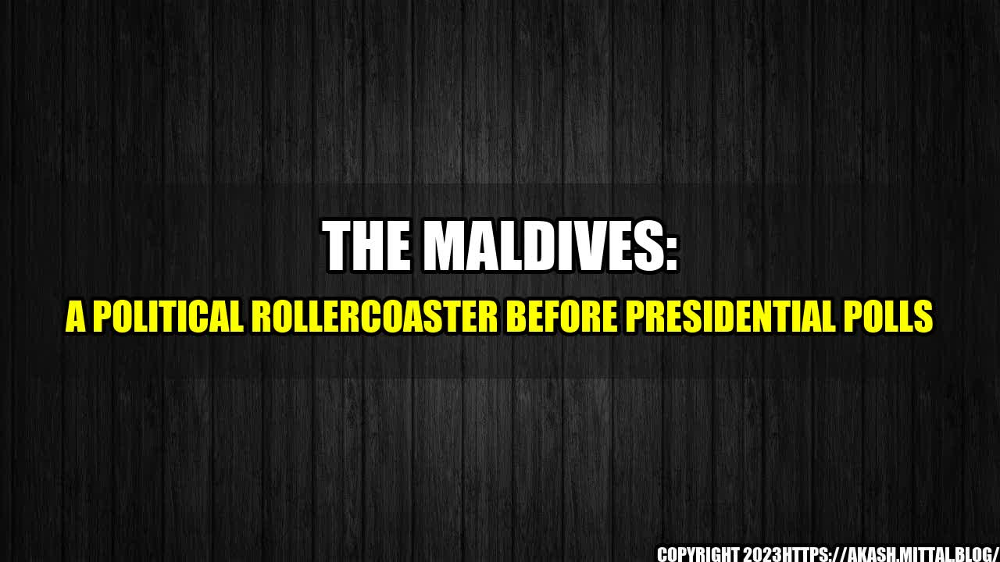

The Maldives: A Political Rollercoaster Before Presidential Polls
It's not often that an island nation of just over 500,000 people makes international headlines for political dramas, but that's exactly what's happening in the Maldives, as the country prepares for presidential polls set to take place in September. Months before the election, the country has been rocked by a series of political developments that have left many wondering what's next for this tropical paradise.
Political Developments
Here are just a few of the political developments that have occurred in the Maldives in the lead-up to the presidential polls:
- In February, the Maldives Supreme Court ruled that former President Mohamed Nasheed, who had been imprisoned on terrorism charges, should be released immediately and given a retrial. The ruling sparked protests and calls for impeachment of the current President Abdulla Yameen.
- In March, Yameen declared a state of emergency, citing national security concerns after the Supreme Court ruling. The move was seen by many as an attempt to cling to power and silence opposition.
- Also in March, the United Nations High Commissioner for Human Rights, Zeid Ra'ad Al Hussein, called for an investigation into the Maldives' judiciary, citing concerns about the independence and impartiality of the courts.
- In April, Yameen's government enacted a new anti-defamation law that criminalizes speech deemed to be defamatory of Islam, the state, or public officials. The law has been criticized by human rights groups as a blatant attempt to stifle dissent.
- And in May, the Maldives' parliament approved a bill that would leave the country vulnerable to corruption and money laundering, according to the opposition. The bill would allow foreigners to own land in the country for the first time.
A Personal Anecdote
These political developments have not gone unnoticed by Maldivian citizens. Zainab is a 32-year-old mother of two who works as a teacher in the capital city of Male. She says she feels like the country is on a rollercoaster that she can't get off of.
"Every day, there's some new development that leaves us wondering what's going to happen next," she says. "It's hard to feel safe and secure when our government seems to be more interested in staying in power than in listening to what the people want."
Conclusion in Three Points
- The Maldives is a nation undergoing rapid political change in the lead-up to presidential polls set for September.
- The current government has enacted a series of measures that have been criticized by opposition groups and human rights organizations.
- Many Maldivians feel like they are living through a period of uncertainty and instability, unsure of what the future holds for their country.

References and Hashtags
- https://indianexpress.com/article/world/maldives-president-turned-on-me-after-he-got-chinese-support-former-vice-president-4849894/
- https://www.aljazeera.com/news/2018/07/maldives-opposition-leader-cleared-money-laundering-180705090716114.html
- https://www.reuters.com/article/us-maldives-politics/china-denies-being-involved-in-maldives-political-crisis-idUSKBN1EG09Q
Hashtags: #Maldives #PresidentialPolls #PoliticalDrama #Yameen #Nasheed
Article Category: Politics
Curated by Team Akash.Mittal.Blog
Share on Twitter Share on LinkedIn